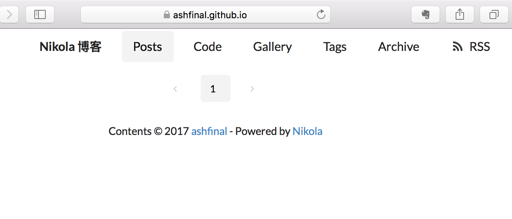

30 分钟搭建一个 Nikola 博客
本文将利用 GitHub Pages 服务 30 分钟内建立一个 Nikola 静态博客，静态页面的更新、维护等则交由 TravisCI 服务完成，最终效果如本博客所示。文章主要 参考来源在此 ，将只涉及搭建步骤，要求读者对命令行操作有一定了解。
准备工作
准备一个 GitHub 账户，新建空仓库： yourname.github.io ，毋需添加任何内容。其中 yourname 为你的 GitHub 用户名。在本地添加新建一个文件夹，与该仓库关联起来。
注意
本文接下来将以“ashfinal”为例说明，请注意将相应处替换为自己的账户！
mkdir newsite && cd newsite git init # 新建 .nojekyll 文件 touch .nojekyll git add . git commit -m "first commit" git remote add origin git@github.com:ashfinal/ashfinal.github.io.git # 提交 master 分支 git push -u origin master # 新建 src 分支 git checkout --orphan src git rm -f .nojekyll
利用已有的配置
到 该仓库 下载已有的配置，注意切换到 src 分支，直接下载 zip 包丢弃其中的版本管理信息，解压并清空 galleries, images, posts 以及 listings 等目录，然后将其复制到刚建立的 newsite 目录，现在你的文件结构应该如下：
>>> tree -a -L 2 ~/newsite/
/Users/ashfinal/newsite/
├── .travis.yml
├── .gitignore
├── conf.py
├── galleries
├── id_rsa.enc
├── images
├── listings
├── posts
└── themes
└── Dawning
配置博客信息
打开 conf.py 配置网站相关信息（第 19 行起），
BLOG_AUTHOR = "ashfinal" # (网站作者) BLOG_TITLE = "Nikola 博客" # (博客名称) SITE_URL = "https://ashfinal.github.io/" # 网站地址 BLOG_EMAIL = "ashfinal@invalid.org" # 邮件地址 BLOG_DESCRIPTION = "随便写点什么" # 网站描述
配置 TravisCI
小心
TravisCI 配置部分已过期，请跳过！详情参见 Open Source on travis-ci.com 。 现在步骤更简单，只需修改 .travis.yml 中的 GITHUB_TOKEN 字段即可。
修改 .travis.yml
接下来打开 .travis.yml 进行相应修改：
删除 16, 17 行
配置用户名、邮件地址以及代码仓库：
- git config --global user.name 'ashfinal' - git config --global user.email 'ashfinal@invalid.org' # ... - git remote add origin git@github.com:ashfinal/ashfinal.github.io.git
添加部署密钥
为 TravisCI 产生 SSH 密钥：
ssh-keygen -C TravisCI -f id_rsa -N ''
打开 GitHub 上 ashfinal.github.io 代码仓库的设置标签页 -> Deploy keys -> Add deploy key，拷贝 id_rsa.pub 文件的内容并粘贴，确定勾选 Allow write access 。
接下来安装 travis 命令行：
gem install travis
然后运行 travis login 并提供你的 GitHub 账号密码，登陆成功会提示：
Successfully logged in as ashfinal!
运行 travis enable ，这将授予 TravisCI 对该代码仓库的相应权限。正确的话会提示：
Detected repository as ashfinal/ashfinal.github.io, is this correct? |yes| y ashfinal/ashfinal.github.io: enabled :)
加密部署密钥
加密刚才生成的密钥，确定覆盖之前的文件：
travis encrypt-file id_rsa --add
正确的话会输出：
encrypting id_rsa for ashfinal/ashfinal.github.io storing result as id_rsa.enc DANGER ZONE: Override existing id_rsa.enc? |no| yes storing secure env variables for decryption Make sure to add id_rsa.enc to the git repository. Make sure not to add id_rsa to the git repository. Commit all changes to your .travis.yml.
提示千万小心不要把未加密的密钥提交到 GitHub，这个之前 macplay 已经替我们做过了（将 id_rsa 添加到 .gitignore ），不放心的话再行确认一遍。
配置 gitalk 评论
基本上到这里我们就差不多完工了。不过因为该博客主题 Dawning 中使用了 gitalk 来做评论组件，我们需要注册自己的评论管理账号。点击 此处 申请一个 GitHub 新应用，依次填写应用名称、主页地址和回调地址，点击申请，成功的话自动跳转，会看到 Client ID 以及 Client Secret 。
打开主题的模版文件，路径为 ~/newsite/themes/Dawning/templates/post.tmpl ，将 51 行开始的内容分别替换为自己的。
clientID: '待填', clientSecret: '待填', repo: 'ashfinal.github.io', owner: 'ashfinal', // 包含该仓库所有者和合作者 admin: ['ashfinal', 'macplay'],
提交 src 分支
所有修改自定义工作已经完成。至此，我们就可以提交所有文件到 GitHub 了。
git add . git commit -am "Automate builds with Travis CI" git push --set-upstream origin src
登陆 TravisCI 网站
使用 GitHub 账户登陆 TravisCI 网站，就能看到新添加的 ashfinal.github.io 仓库正在重新构建，等待其首次构建完成你的博客就可以访问了。浏览器输入 https://你的账户/github.io ，比如笔者这里已经一切就绪。
添加第一篇博客
复制以下内容，保存为 my_first_blog.md 。注意文件名小写和下划线，文件保存路径为 ~/newsite/posts/ 。
--- title: 我的第一篇文章 slug: first_blood date: 2017-09-20 11:32:34 UTC+08:00 tags: nikola, markdown category: markdown author: ashfinal --- ## 第一篇文章！ 随便写点什么。
git add/commit/push 命令三连击，将其推送到 GitHub。稍等几十秒钟，刷新博客首页就能看到添加的文章了。关于文章写作和博客维护的更多信息，可以查看 之前的文章 。
文章链接：https://macplay.github.io/en/posts/30-fen-zhong-jian-li-yi-ge-nikola-bo-ke/
发布/更新于：
版权声明：如无特别说明，本站文章均遵循 CC BY-NC-SA 4.0 协议，转载请注明作者及出处。